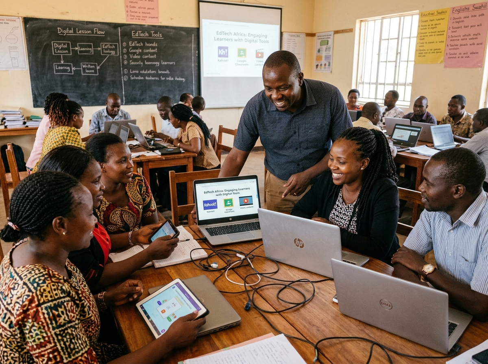
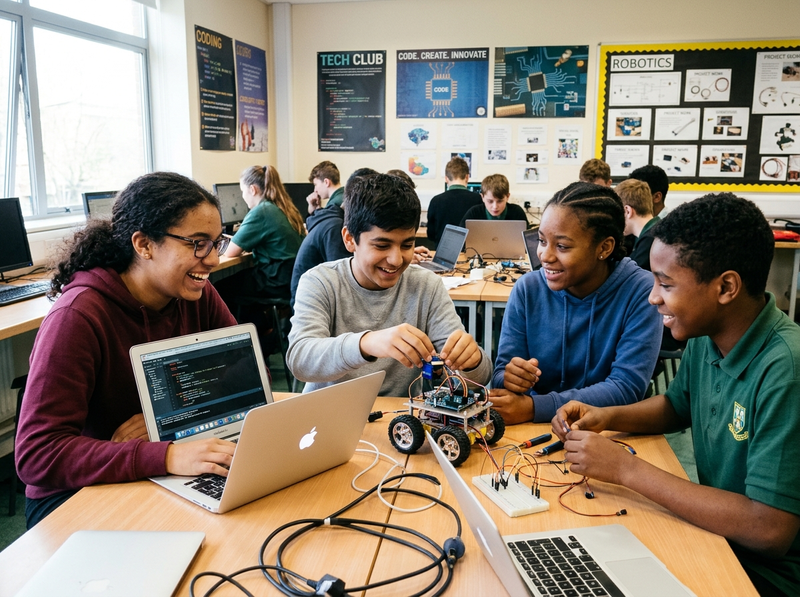
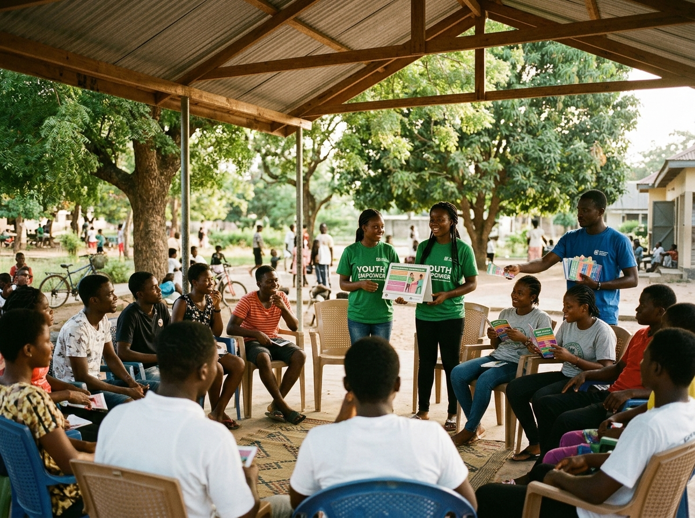
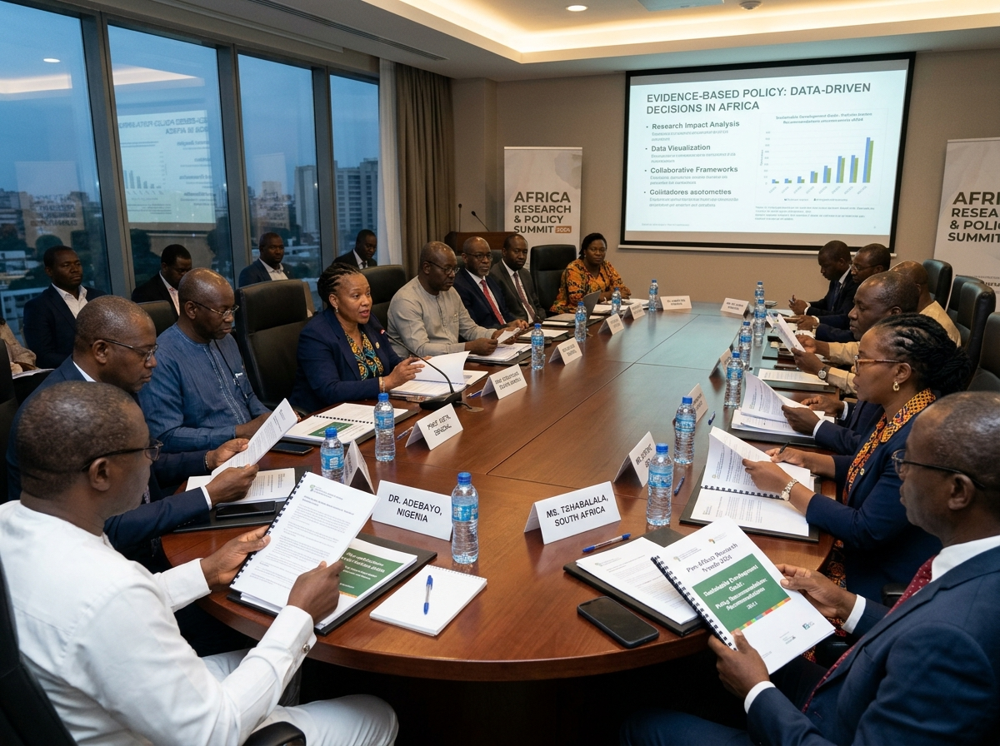

Digital Education & Skills
Strengthening educators and learners through structured computer literacy, digital pedagogy, open educational resources, and classroom-ready tech tools.
Explore InitiativeSiRI-Hub is an African center of excellence bridging applied scientific research, digital teacher empowerment, grassroots youth technology clubs, and adolescent wellbeing.
Certified participatory programs across schools and community hubs.
SiRI-Hub organizes its multi-sectoral interventions around five interlinked pillars, distinguished by dedicated methodologies and clear outcomes.
Strengthening educators and learners through structured computer literacy, digital pedagogy, open educational resources, and classroom-ready tech tools.
Explore InitiativePromoting adolescent sexual and reproductive health and rights through dignified, peer-supported education, community outreach, and rights protection.
Explore InitiativeConducting rigorous field surveys, data collection, and evaluative research that furnish policymakers and institutions with actionable empirical insights.
Explore InitiativeEstablishing school-based and community digital clubs where adolescents learn coding, robotics, creative problem-solving, and build digital ventures.
Explore InitiativeForging high-level synergies with educational ministries, international development agencies, university faculties, and tech industry partners.
Explore InitiativeIn-depth operational programs advancing teacher digital capacity, student innovation clubs, community adolescent health, and collaborative research.

Pillar 01 • Digital EducationEquipping primary and secondary educators with practical digital teaching competencies, offline digital repository usage, and multimedia pedagogical methodologies.

Pillar 04 • Youth Tech ClubsImmersive hands-on technology clubs empowering girls and boys with coding in Python, web development, robotics prototyping, and design thinking.

Pillar 02 • Health & WellbeingCulturally responsive, consented adolescent reproductive health outreach, peer mentorship circles, mental wellbeing forums, and community caregiver engagement.

Pillars 03 & 05 • Evidence & PolicyHigh-level roundtables, empirical surveys, policy synthesis, and strategic co-creation with government ministries and international donor foundations.
All indicators are verified through rigorous monitoring and evaluation frameworks before publication.
Field dispatches, research announcements, and open fellowship calls from across our network.
Equipping educators with solar-powered offline servers and localized STEM curriculum guides.
Read Article →Synthesizing survey data from 3,500 adolescents on digital access and reproductive rights education.
View Brief →Adolescent teams develop solar monitoring devices and peer health mobile applications.
See Highlights →Whether you represent a government ministry, academic institution, philanthropic donor, or community organisation, join us in building sustainable research and digital empowerment.